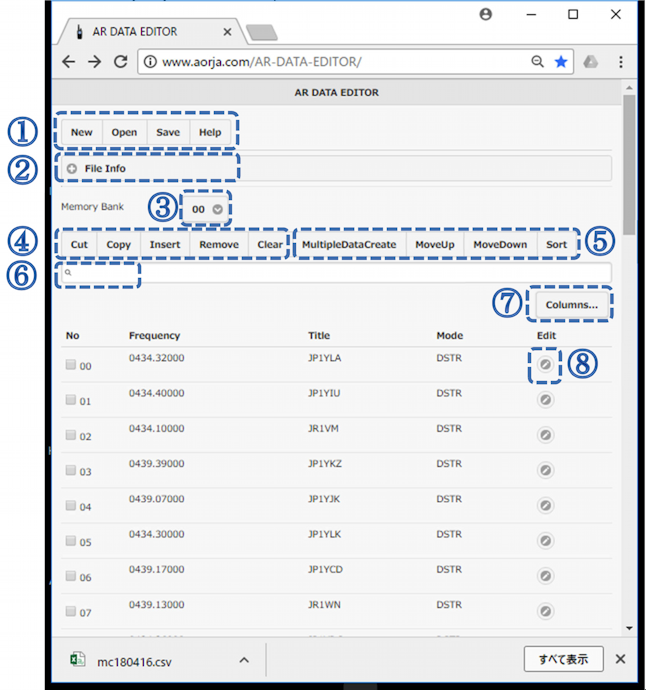
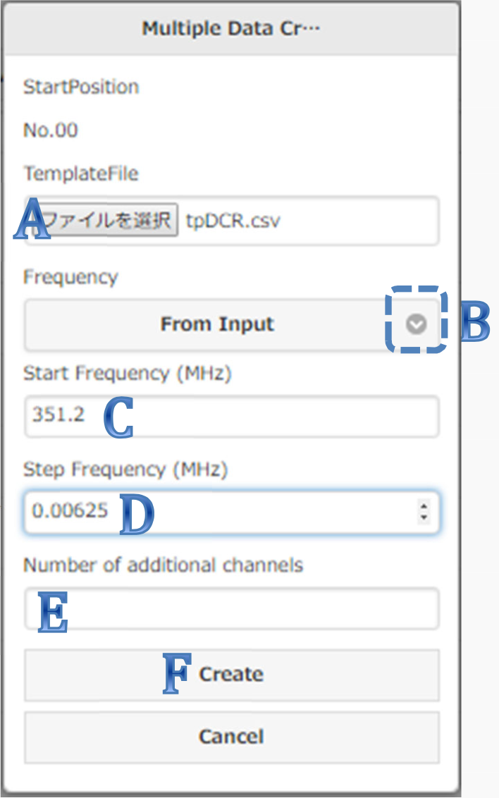
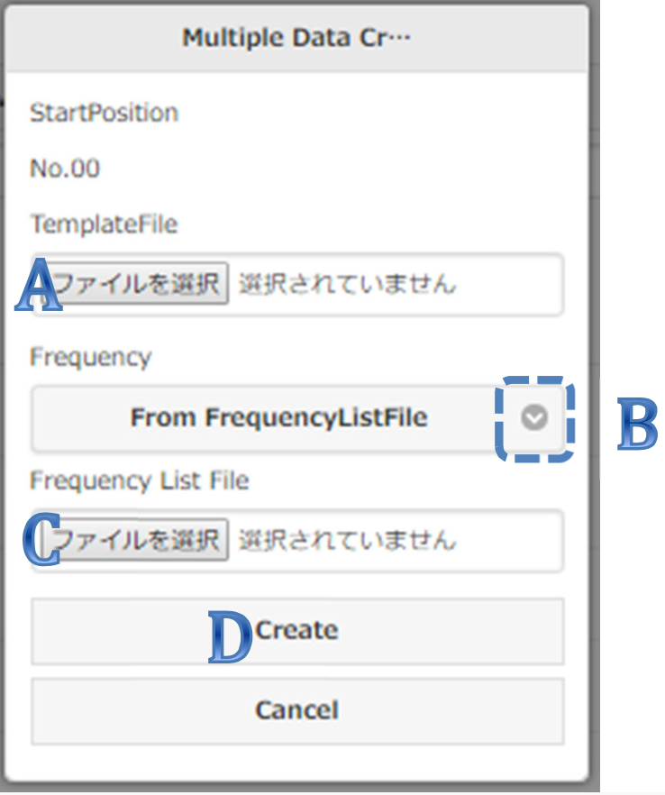

AR DATA EDITOR – A convenient browser based memory data editor for the AR-DV1 and AR-DV10 receivers
Hardware/software requirements:
- A browser. Most common browsers should work, except Internet Explorer.
- An SD card reader. The data is read-off and written to the SD card to which the receiver’s memory data has been copied to. Connecting the receiver to your PC is not required!
What does AR DATA EDITOR allow me to do?
- Load, edit and save your receiver’s memory channel data.
- Create new frequency databases
- File format conversion between AR-DV1 and AR-DV10. In other words, a frequency database of one receiver can be opened and saved into a format the other receiver can understand.
Let's get started!
Go to http://www.aorja.com/AR-DATA-EDITOR/
***Important: Do never click the browser’s “back” button while editing your database, or all non-saved changes will be lost!***
The following page will be displayed.
Insert the SD card containing your receiver memory data into your PC’s SD card reader. It will be a blank SD card if you are creating a database for the first time.
Tabs explained
[New]
Create a new memory channel file, or a default template file
- Click [New]
- Select the file type to create (Memory Channel file or Template file). If it’s your first use of this software, chose “Memory Channel file”.
- Select the receiver model (AR-DV1 or AR-DV10)
- Click [Create]
[Open]
Open a memory channel file (memch.csv) which has already been created by the receiver
- Click [Open]
- Select and open the desired file
[Save]
Save current contents to a new file
- Click [Save]
- Select the receiver model (AR-DV1 or AR-DV10)
- Enter a file name (up to 8 characters) (keep the extension [.csv] as it is)
- Click [Save] to save the file to your PC (the folder it has been saved to depends on your browser’s settings)
[Help]
Open the help page (this document)
- Click [Help]. The help file opens in a new tab.
- Read all instructions
[(+) File Info]
View details about the memory channel data file being imported
- Click [(+) File Info]
- Displays the file name and its extension, the type of database, receiver model, firmware version and date of file registration
- You can minimize this information by clicking on [(-) File Info]

Memory Bank [00 (v)]
Select a memory bank number
- Click the arrow and select the desired memory bank number between 00 and 39.
[Cut]
Cut selected memory channel data and to paste it elsewhere
- Select one or more channel numbers (No) to cut
- Click [Close]
- Select a memory bank and channel number (No) where you would like to paste the data
- Click [Insert] to paste the data.
[Copy]
Copy selected memory channel data to another bank/memory channel
- Select one or more channel numbers (No) to copy
- Click [Close]
- Select a memory bank and channel number (No) where you would like to copy the data
- Click [Copy] to copy the data.
[Insert]
Paste memory channels which have been previously copied by the [Copy] or [Cut] functions.
(Destination memory channels must be empty)
- Select a memory channel number (No) to paste the data into.
[Remove]
Delete selected memory channels (the deleted channels will be occupied by the following registered memory channels in the list)
- Select one or more memory channels to be deleted
- Click [Remove] to delete the selected memory channels. (Warning: This action cannot be reverted!)
[Clear]
Delete selected memory channels (the "open" channels will stay unoccupied)
- Select one or more memory channels to be deleted
- Click [Clear] to delete the selected memory channels. (Warning: This action cannot be reverted!)
[MultipleDataCreate]
Bulk register frequency channels using templates
- Select an empty memory bank and memory channel number (No) from which you would like to start bulk registration of frequency channels.
- Click [MultipuleDataCreate]
There are 2 ways to proceed:
- Method A: Manually set a start frequency and step size
A: Select a previously created “template” file which contains memory data settings you would like to replicate at a larger scale.
Instructions on how to create a template:
[New] -> FileType [Template File] -> Select receiver model -> [Create]
Select a memory channel and edit it by applying the settings you would like to replicate at a larger scale.
[Save]
B: Click the arrow and select [From Input]
C: Set the start frequency (351.2 MHz in this example).
D: Set the frequency step (0.00625MHz or 6.25kHz in this example).
E: Set the number of channels you would like to create this way. Remember that you can’t create more channels than there are available in the memory bank you selected for this task.
F: Click [CREATE] and the memory bank you selected will be populated accordingly.
- Method B: Importing a frequency list file
A: Select a previously created “template” file which contains memory data settings you would like to replicate at a larger scale.
B: Click the arrow and select [From FrequencyListFile].
C: Select a previously created frequency list file.
Format instructions for the creation of the frequency list file (.txt extension):
Frequency and title as comma-delimited text
Frequencies: In MHz. Up to five digits after the comma.
Title: Up to 12 characters
New line of code: CR + LF (in Windows)
Example:
351.2,DCR-01ch351.20625,DCR-02ch
351.2125,DCR-03ch
Remember that you can’t create more channels than there are available in the memory bank you selected for this task.
D: Click [create] and the memory bank you selected will be populated accordingly. Remember that you can’t create more channels than there are available in the memory bank you selected for this task.
[MoveUp] & [MoveDown]
Move the contents of a selected memory channel, up or down the list.
- Select the memory channel number (No) you would like to move.
- Click [MoveUp] to move it one step up.
Click [MoveDown] to move it one step down.
[Sort]
Sort memory channels, by frequency or receive mode
- Click sort [Sort].
- For each column to sort, [Frequency] and [Mode], select [ASC] (for ascending) or [DESC] (for descending).
- Click [Sort] to sort the data accordingly.
[Search bar]
Narrow down the data display by frequency, title or mode.
- 1. Enter the frequency digits, title or mode characters and the displayed data will be filtered dynamically as you type.
[Columns...]
Chose which of the columns (No, Frequency, Title, Mode, Edit) should be displayed or hidden.
- Click [Columns...]
- Check the columns you want to display. To close this window section, click anywhere else on the window.
[Edit]
Display and edit the content of the corresponding memory channel
- BANK-CH (bank and channel number)
- FREQ (Frequency in MHz)
- STEP SETTING (Frequency step and step-adjust)
- MODE (Receive mode)
- IFBW (IF bandwidth)
- PASS (Set as a pass frequency)
- T:TITLE (Title)
- PROTECT (To protect against accidental erasing)
- SQL N/L (Manually set squelch type to noise squelch, level squelch, or auto)
- OFFSET F. (Offset frequency in MHz)
- DIGI.DISP (Display information about the digital signal received, if supported)
Changes to this page must be saved by clicking the [OK] button at the top right of the window.
©2018 AOR, LTD.
Ver.1.1.5(20180607)